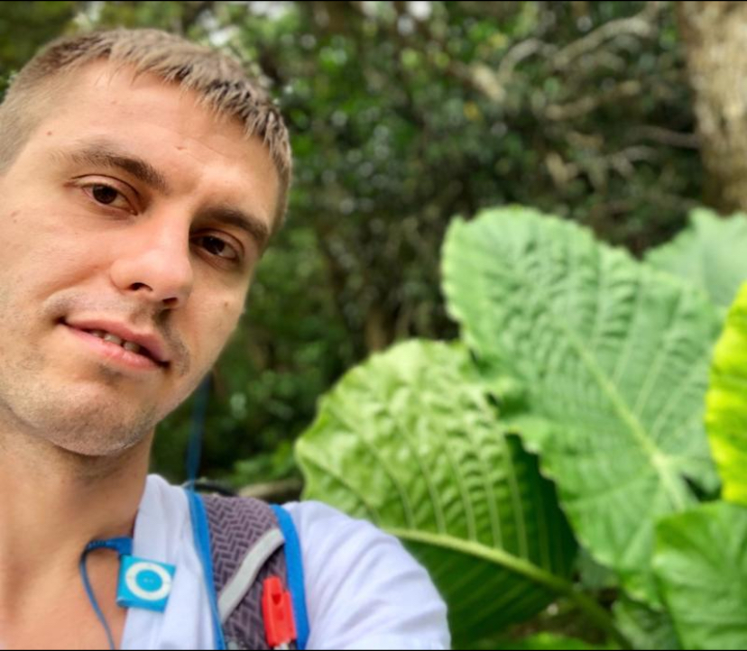
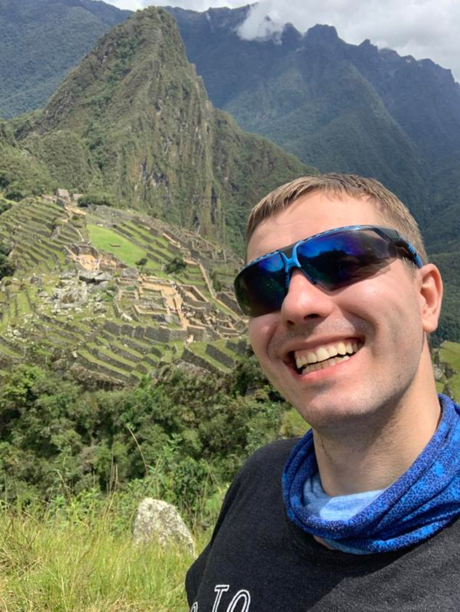
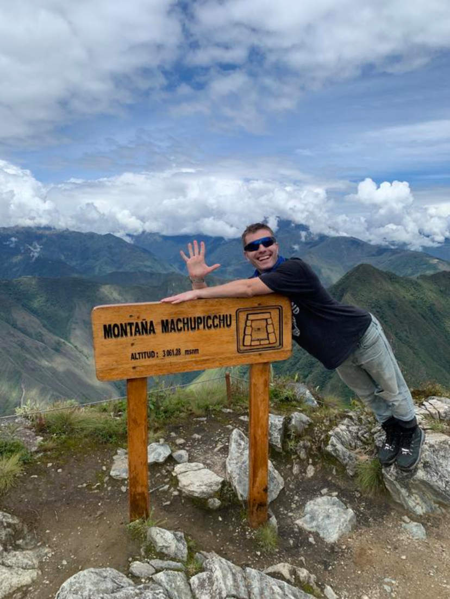
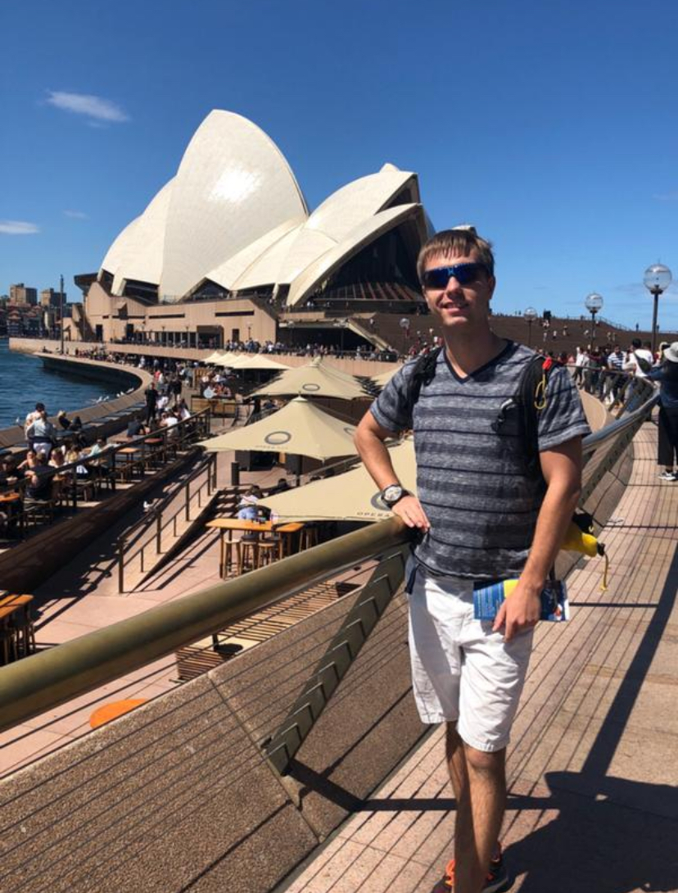
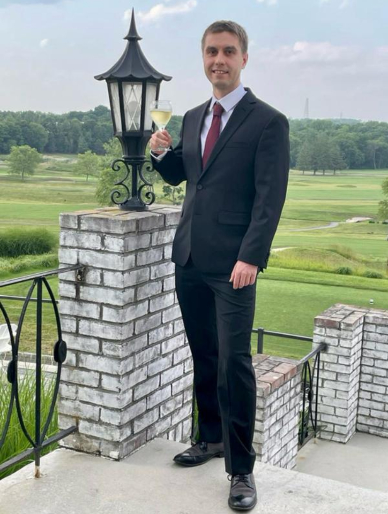
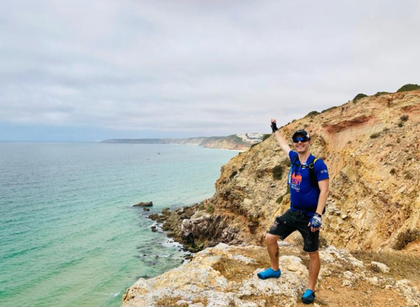
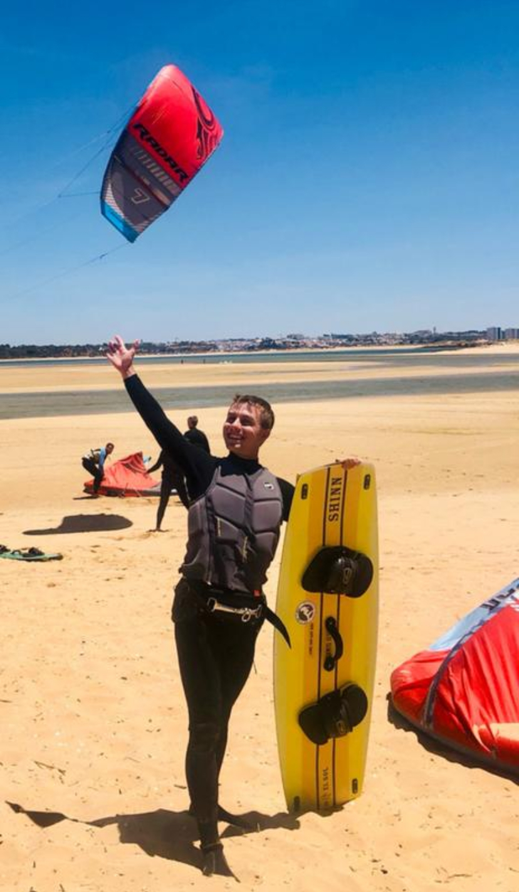
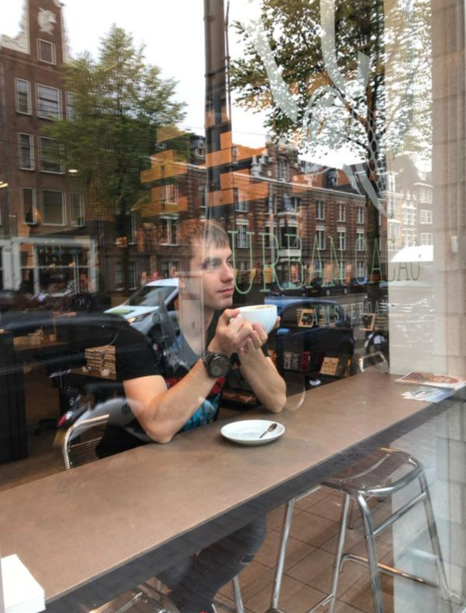
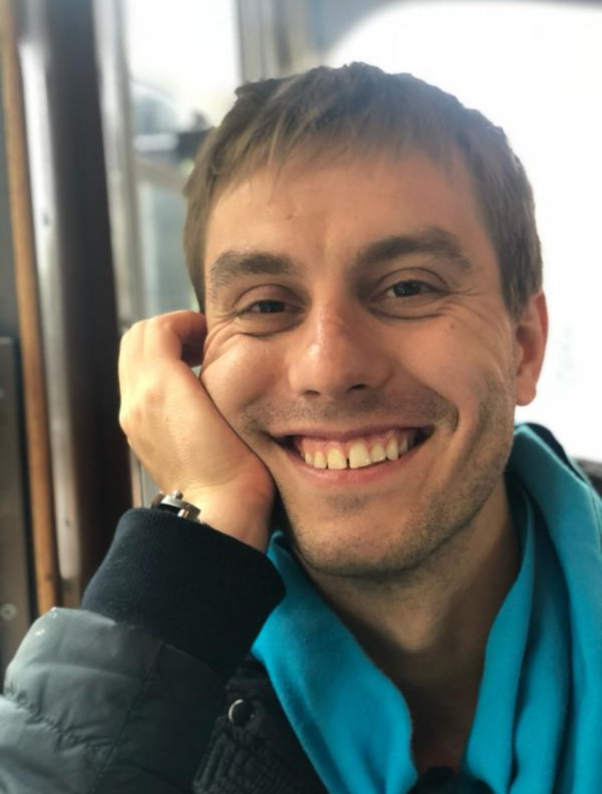
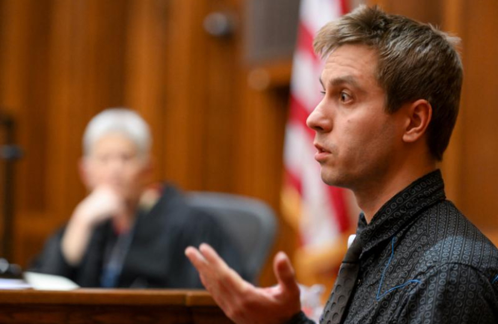

Добро пожаловать на мой сайт, созданный для поиска второй половины
Личная история, ценности и взгляд на отношения — открыто и по делу.


🧭 О себе
Привет! Меня зовут Александр, 38 лет, рост 175 см, вес 65 кг. Добро пожаловать на мой сайт, созданный для поиска второй половины. Расскажу о себе кратко и емко, а заодно опишу, какая девушка мне подходит.
Чтобы тебе было проще понять, кто я, коротко расскажу о себе.
Я — редкая птица 🙂 Целеустремлённый, активный и любящий движение: бег, велосипед, сноуборд, лыжи, ЗОЖ — это про меня. Слежу за собой, выгляжу моложе своих лет и в целом жизнерадостный человек, который по-настоящему любит жизнь. Привык ставить цели и добиваться их.
По профессии я врач и предприниматель. Медицина для меня не просто работа, а ещё и искренний интерес. Мне важно быть полезным, я люблю людей и люблю помогать. Обожаю учиться — в общей сложности 12–14 лет своей жизни посвятил образованию, и этот процесс до сих пор приносит мне удовольствие. Интересуюсь психологией, ценю глубокие разговоры и спокойно отношусь к конструктивной критике.
После окончания московского медицинского университета я уехал в США, подтвердил там диплом и поработал по специальности. В общей сложности провёл в Штатах 10 лет. Сейчас возвращаюсь, потому что хочу жить в Москве — для меня это лучший город на Земле. Хочу создать большую семью, встретить русскую женщину, с которой будем смотреть в одном направлении.
Я в разводе, детей нет.
💍 Кого я ищу
Мне близка идея большой и крепкой семьи, поэтому я ищу симпатичную, активную и целеустремлённую девушку, которая так же осознанно настроена на серьёзные отношения и создание семьи. Примерный возраст — от 30 до 35 лет, хотя возможны разумные исключения. Чтобы было понятнее, какой человек мне откликается, дальше коротко опишу по пунктам.
✨ 1) Симпатичная
1) Симпатичная. Мне нравится стройная девушка ростом примерно 160–175 см, с гармоничным телосложением, желательно 2-3 размер груди. Важна естественная привлекательность и ухоженность. Предпочитаю блондинок, особенно с голубыми глазами — это мой любимый тип внешности.
Очень ценю здоровый образ жизни: если ты следишь за собой, занимаешься спортом и любишь активность — это большой плюс. Для меня важно, чтобы дома было уютно и спокойно: я люблю засыпать в тишине (без телевизора) и надеюсь, ты тоже 🙂 И да, я очень люблю обниматься — так что «обнимашки» обязательны.
Пишу конкретно не из придирчивости, а потому что понимаю, кто мне действительно подходит. При этом, если ты не полностью соответствуешь описанию, но чувствуешь отклик и считаешь себя привлекательной — обязательно пиши. Живое чувство всегда важнее формальных критериев.
Что для меня принципиально: я не рассматриваю отношения с теми, кто курит (включая вейпы), употребляет наркотики или злоупотребляет алкоголем. Также мне сложно будет с человеком, который не любит спорт, не ведёт активный образ жизни и не имеет целей или стремлений.
Мне близко движение вперёд и желание расти — вместе.
🧠 2) Психологическая зрелость
2) Мне важна психологическая зрелость. Я ищу девушку, которая умеет брать ответственность за свою жизнь, справлялась и справляется с трудностями — и внутренними, и внешними, в том числе финансовыми. Для меня важно, чтобы рядом была женщина, способная в случае необходимости стать надёжной опорой и достойно воспитать наших будущих детей.
Мне не близки инфантильность, корысть и зависть. Я не ищу отношения ради физической близости. Да, секс — важная часть союза, но он далеко не на первом месте. Гораздо ценнее для меня уважение, взаимопонимание, поддержка, любовь и общие цели.
В отношениях я особенно ценю искренность, честность, доверие и открытый диалог. Со мной можно говорить обо всём — от лёгких тем до самых глубоких. Я уверен, что с правильным человеком нам будет по-настоящему интересно и тепло вместе.
И скажу без ложной скромности: женщине, которая будет рядом со мной, повезёт. По крайней мере, я бы искренне порадовался, встретив такого человека на месте девушки.
🎯 3) Целеустремленная
3) Целеустремленная - Мне близка зрелая, самодостаточная женщина, которая уже чего-то добилась или уверенно идёт к своим целям. Та, которой по-настоящему интересна жизнь, которая умеет мечтать, строить планы и воплощать их в реальность. Я ищу не просто отношения, а союз — партнёрство, где мы вместе реализуем общие цели и создаём крепкую семью.
Мне особенно импонируют женщины из медицины или бизнеса — мне близок этот образ мышления, ответственность и масштаб.
При этом важно сказать честно: если тебе нужен только штамп в паспорте, материальная выгода, недвижимость или обеспечение — нам точно не по пути. Я за союз по любви, уважению и общим ценностям, а не по расчёту.
Если ты ищешь партнёра, а не спонсора — тогда нам действительно есть о чём поговорить.
👨👩👧👦 4) Семья и дети
4) Мне важно, чтобы ты действительно хотела семью и любила детей. Я мечтаю о большой семье — минимум о троих детях — и хочу быть активно вовлечённым отцом, участвовать в их воспитании и жизни каждый день.
В идеале ты уже реализовалась или уверенно состоялась в профессии, и сейчас чувствуешь внутреннюю готовность перейти к следующему этапу — созданию семьи.
Скажу честно: если по состоянию здоровья ты не можешь иметь детей или осознанно придерживаешься позиции childfree, нам, скорее всего, будет не по пути — у нас просто разные жизненные планы.
Для меня важно иметь своих детей. Предпочтительно, чтобы у тебя их не было. Но если ты чувствуешь, что в остальном мы подходим друг другу, и у тебя есть ребёнок — можно попробовать познакомиться. В таком случае я буду подробно обсуждать все нюансы, чтобы понимать, насколько мы совпадаем по взглядам и ожиданиям.
Главное — чтобы всё было честно и осознанно с самого начала.







⚖️ Ценности и принципы
Если ты дочитала до этого места — уже приятно 🙂 Значит, тебе действительно важно понять, кто я и чего ищу.
Добавлю ещё несколько моментов — это мои ценности. То, что для меня принципиально и через что я не готов переступать. Ты можешь быть с чем-то не согласна, можешь относиться к этому по-своему — и это абсолютно твоё право. Так же как и моё право — решать, начинать ли нам общение.
Для меня важно, чтобы всё было честно, открыто и по-взрослому с самого начала:
И ещё несколько принципиальных моментов, о которых считаю важным сказать сразу.
В браке я вижу разумный и прозрачный подход к финансам — у нас будет брачный договор с режимом раздельной собственности. Я не претендую на чужое, но и к своему отношусь ответственно.
Я за осознанное отношение к деньгам. Не люблю финансовую беспечность и безграмотность. При этом я не жадный — просто привык рационально распоряжаться ресурсами ради реализации целей и планов.
У каждого из нас будут собственные банковские счета и понятное распределение финансовых обязанностей. При этом со мной можно чувствовать себя спокойно: в декрете или в сложной ситуации ты всегда сможешь на меня опереться.
Мне важно, чтобы ты понимала, чего хочешь от жизни, строила планы и двигалась вперёд. Позиция «плыть по течению» — не моя история.
Я за искренние, глубокие разговоры и настоящее взаимопонимание — без игр и недосказанностей.
Перед созданием семьи считаю обязательным пройти генетическое тестирование — это вопрос ответственности перед будущими детьми.
Я не ревнивый человек, но измены для меня категорически неприемлемы.
И важный момент: я хочу жить в Москве и не рассматриваю для себя другой город.
✉️ Контакт
Пожалуй, это основное.
Если ты дочитала до конца, в приветственном сообщении напиши слово «кот» — так я пойму, что ты внимательно отнеслась к моим словам 🙂
Удачи. Всё обязательно будет хорошо.